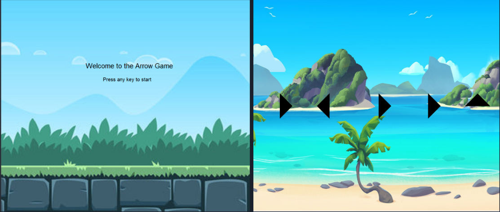
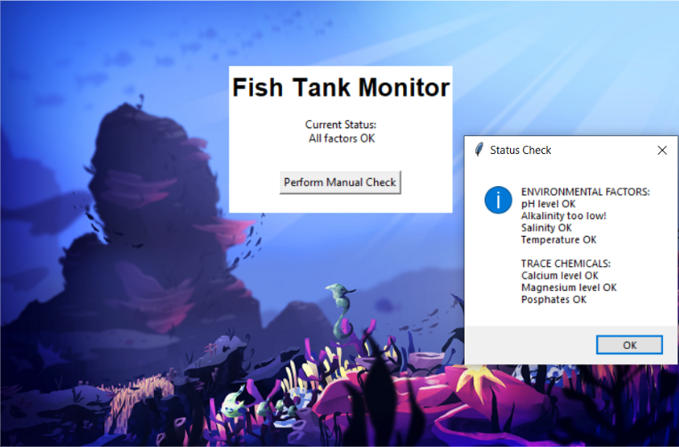

This is my Portfolio Page!
This Is My First Game!
We made a game simialar to the popular toy, Etch-A-Sketch. In our game the player uses the arrow keys to manuver an arrow around and inside a designated boarder. If the player choses to do so they are able to change the color of their arrow and changes the color of the arrows trail.
Arrow Game!.
This was our 1.2.5 project! We made a fully interactive game in which the use has to press a series of arrows using the arrow keys. As the user progresses, the levels get harder and the backgrounds change. We randomized the arrow directions and if the player made a mistake, the sequence restarts.
Sandy Cheeks Wizard Academy
This is our remixed game from Scratch.com, we made a Spongebob / Wizard platformer game. It consists of Sand Cheeks from Spongebob and her adventure to become a wizard. The player uses the arrow keys to move around the map to avoid the red lava. /
Fish Tank Moniter
In this project we documented and fixed issues we found within the fish tank. We first started by adding breakpoints to the sections we found problems with. We debugged the issues of alkalinity level, temperature.
Use data files to create graphs.

Using netlogo do remix of illusions.